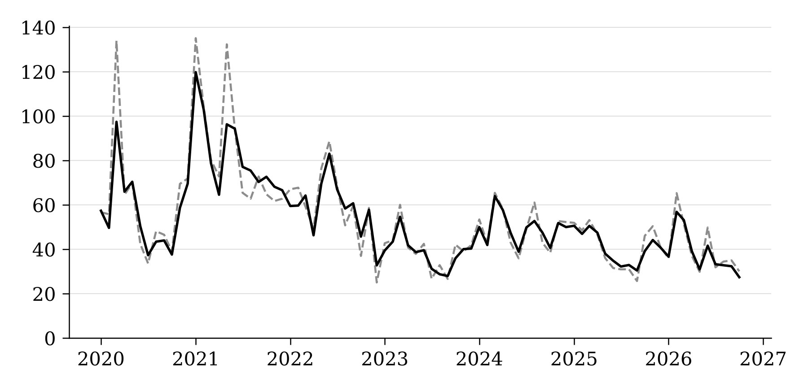
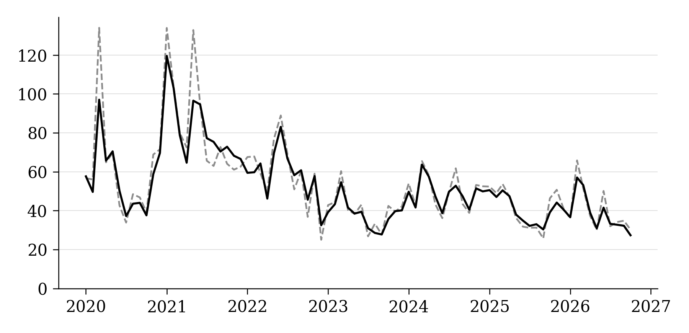
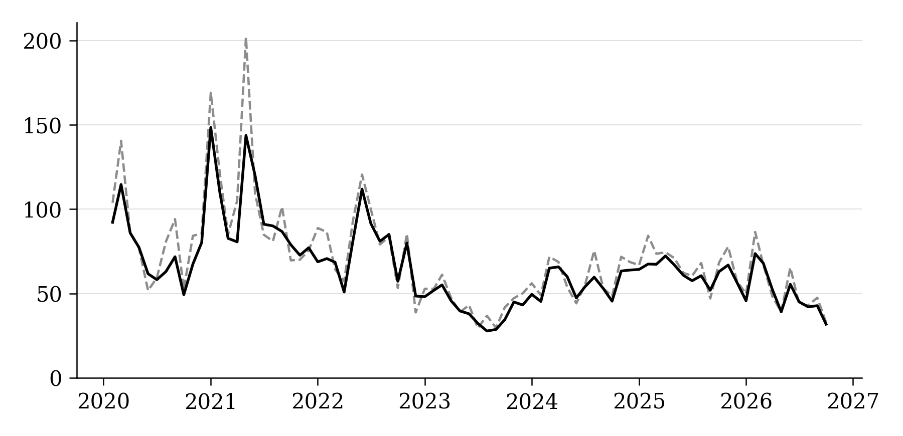
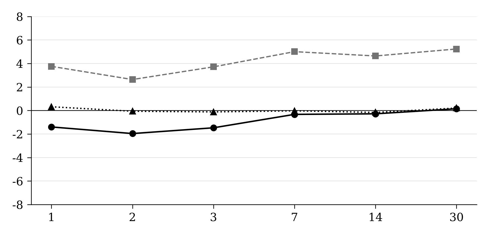
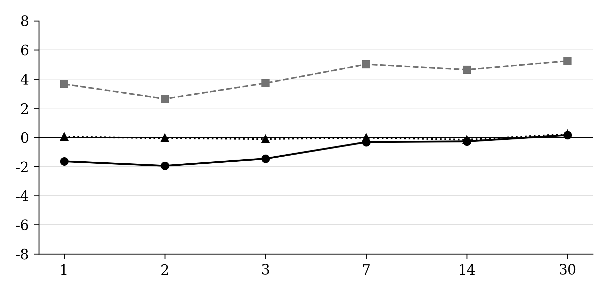
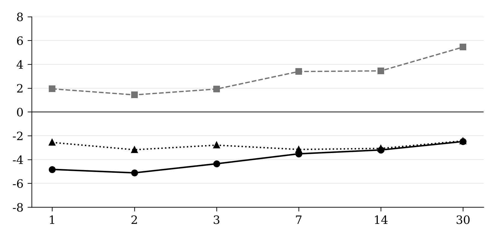
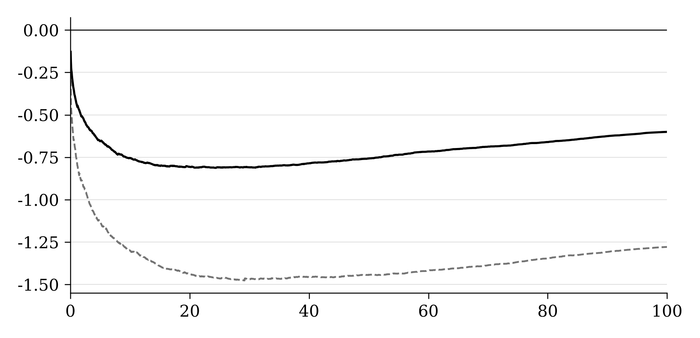
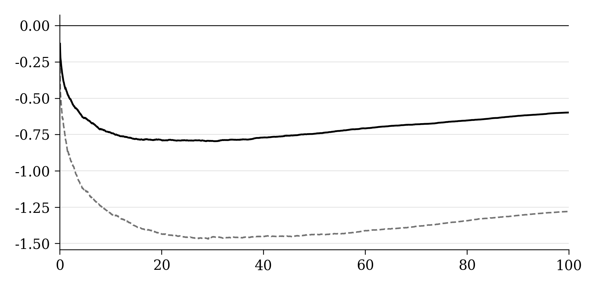

Left: unchanged embedded manuscript image. Right: regenerated from packaged daily inputs. Underlying data: figure1_data.csv, figure2_data.csv, figure3_data.csv.








Main recalculations apply the manuscript’s stated 23-hour target to Figures 1–3. The historical 24-hour source-data replay is preserved under source_version/.